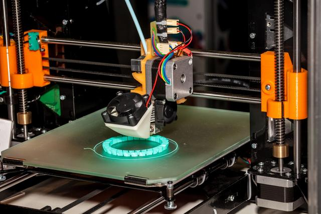

3D Printer
background
3D printing technology (also known as additive manufacturing) has made significant progress since its inception in the 1980s. The following is an overview of the latest applications, materials, machines, and new technologies of 3D printing technology.
Latest applications
1. Medical and bioprinting:
Organ and tissue printing: Scientists are studying how to use 3D printing technology to manufacture transplantable human organs and tissues. This includes printing skin, blood vessels, heart valves, etc.
Customized medical equipment: 3D printing can be used to manufacture personalized prosthetics, dental equipment, and hearing aids.

2. Aerospace and Automotive:
Lightweight parts: 3D printing technology can produce lightweight and structurally complex components, helping to improve fuel efficiency and performance.
Rapid prototyping manufacturing: In the process of new product development, 3D printing can quickly produce prototypes, reducing research and development time and costs.


New materials
1. Metal materials:
Titanium alloy: Due to its high strength and corrosion resistance, it is widely used in the aerospace and medical fields.
Aluminum alloy: lightweight and easy to process, suitable for the automotive and aerospace industries.
2. Polymer materials:
High performance plastics, such as PEEK (polyether ether ketone) and ULTEM (polyether imide), have high heat resistance and strength.
Flexible materials, such as TPU (thermoplastic polyurethane), are suitable for applications that require elasticity and flexibility.
3. Composite materials:
Carbon fiber composite materials: used in fields that require high strength and low weight, such as aerospace and automotive manufacturing.
Fiberglass composite materials: widely used in construction and consumer goods.
4. Biomaterials:
Biocompatible materials: used for medical implants and tissue engineering.
Hydrogel: used for biological printing and drug delivery system.
New Machines and Technologies
1. Multi material printer:
These printers can use multiple materials in a single printing process, making it possible to manufacture complex multifunctional components.
2. High speed 3D printer:
The new generation of 3D printers has significantly improved printing speed, such as HP's Multi Jet Fusion technology and Carbon's CLIP (Continuous Liquid Interface Production) technology.
3. Large scale 3D printers:
Used for printing large structures such as buildings and bridges. Companies such as ICON and Apis Cor are driving the development of this field.
4. Hybrid manufacturing system:
Integrating additive manufacturing with traditional subtractive manufacturing (such as CNC machining) to optimize the production process.
5. Smart printer:
Equipped with AI and machine learning algorithms, it can automatically adjust printing parameters, detect and correct errors during the printing process.
New printing technology: Light curing (SLA) and digital light processing (DLP): Using photosensitive resin and light source curing, suitable for high-precision and detail demanding applications.
New Paper and Substrate Technology
Although "paper" is usually associated with traditional printing, the use of some new substrates in 3D printing can also be understood as "new paper" technology:
1. Nanofibers and cellulose substrates:
These materials can be used as substrates for bioprinting, with good biocompatibility and mechanical properties.
2. Recyclable materials:
Developing environmentally friendly 3D printing materials, such as biodegradable plastics and renewable resource substrates, to promote sustainable manufacturing.
From the above content, it can be seen that 3D printing technology is constantly advancing, its application fields are expanding, and new materials and technologies are constantly emerging. In the future, with the maturity and popularization of technology, 3D printing is expected to have a profound impact in more fields.

Use slice software to setting parameter
1. Initial setup, adding a printer

2. Open the previously modeled potted plant, click 'Export', select the 'stl' format, and save it to the desktop

3. Import the 'stl' format model into UltiMaker Cura and set the parameters as shown in the figure
| Name | Numerical value |
|---|---|
| The top thickness | 2 |
| The top layer | 5 |
| Bottom thickness | 2 |
| The bottom layer | 5 |
| Fill density | 20 |
| Fill pattern | Gride |
| Print temperature | 200 |
| Print Platform Temperature | 60 |
4. Select the printer as shown in the figure

5. Select 'normal 0.15mm' for the configuration file and '1.6mm' for the wall thickness

6. Click on 'Slice' and select 'Keep Changes'

7. Save and export in 'Gcode' format

Use 3D printer to manufacture it
1. Import the 'Gcode' format model into a USB drive

2. Insert the storage card into the 3D printer

3. Click 'Print'
4. In the file list, select the model we need to print

5. Click 'Start Printing'

6. Wait for heating. Once the extrusion temperature reaches 200 degrees Celsius and the hot bed temperature reaches 60 degrees Celsius, the printing work can begin

7. Start working
Postprocess the surface
Gcode
1.Model
Modeling sketch(with dimensions)
Modeling sketch(without dimensions)
2.Three views
Top view

Side view
Front view

Convex oblique effect
3.Save as stl file
4.Put it into 3D printing software
Click file
Select file